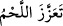
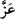
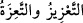
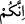
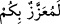

“sert yer” demektir. __WORD__ “et sertleşti” demektir. “__WORD__” sanki ulaşılması zor olan
sert ve sarp bir yerde hasıl oldu demektir. Tâcü’l-masâdır’da der ki: “__WORD__
güçlendirmek demektir. “__WORD____WORD__" şeklindeki (İbn Ömer (r.a.)’ın sözü olarak
nakledilen) rivâyette ‘Size (fetvâ) ağırlaştırılmış, size ağırı yüklenmiş’ demektir.[118]
Üçüncü elçi Şem’ûn es-Safâ’dır. Ona “Şem’ûn es-Sahra” da denir. Havârîlerin
reisidir. Îsâ (a.s.) göğe kaldırıldıktan sonra onun halifesi olmuştur. et-Tekmile’de der ki:
“Gönderilen bu üç elçi hakkında ihtilaf edilmiştir. Bunların doğrudan Allah tarafından
gönderilen nebî ve rasuller olduğu da söylenmiştir. Meryem oğlu Îsâ (a.s.)’ın mezkûr
şehir halkına gönderdiği havârîler oldukları da söylenmiştir. Ancak Îsâ (a.s.)’ın onları
göndermesi Allah’ın emriyle olduğundan Allah Teâlâ gönderme işini kendine izâfe
etmiştir.” Buradan havârîlerin ne Îsâ (a.s.) zamanında ne de Îsâ (a.s.) göğe
kaldırıldıktan sonra peygamber olmadıkları anlaşılmaktadır. Peygamberimiz’in(s.a.):
“Benimle onun (yâni Îsâ) arasında peygamber yoktur.”[119] hadîsinde de buna işâret
vardır. Gerçi bu hadiste müstakil bir şeriatla gelen bir peygamber olmadığının
kasdedilmiş olması da muhtemeldir. Ancak bu, geçmiş bir şerîatı uygulayan bir
peygamber olmasına ters düşmez.
“Onlar:” yâni hepsi “Biz size gönderilmiş Allah elçileriyiz!” dediler.” Önceden
meydana gelen inkâr sebebiyle sözlerini te’kid ederek söylediler. Çünkü hepsinin
sözü/dâvâsı aynı olduğu için önce gönderilen iki elçinin yalanlanması üçüncü elçinin de
yalanlanması demektir.
Keşfü’l-esrâr’da der ki: “Kıssa şöyledir: Âlemlerin Rabbi, Îsâ (a.s.)’a şöyle vahyetti:
“Ben seni semâya çıkartacağım, havârîleri birer birer, ikişer ikişer şehirlere gönder de
insanları hak dine davet etsinler.” Îsâ (a.s.) onları topladı; reisleri ve büyükleri
Şem’ûn’du. Onları birer birer, ikişer ikişer belli bir kavime gönderdi ve şehirlerinin
ismini belirledi. Onlara dedi ki: “Ben semâya gidince, siz belirlediğim yere gidin ve
dâvette bulunun. Eğer o kavmin dilini bilmezseniz, gittiğiniz yolda elinde şarap kadehi
olan bir melek karşınıza gelir. O nurlu şaraptan için, o zaman o kavmin dilini bilirsiniz.”
İki kişiyi Antakya şehrine gönderdi.” Onlar putperest idiler.
Tefsir ehlinin çoğu der ki: Îsâ (a.s.) göğe kaldırılmadan önce onlara iki elçi gönderdi.
Onlara o şehre gitmeleri emredince, elçiler: “Ey Allah’ın peygamberi! Biz o milletin
dilini bilmiyoruz.” dediler. Îsâ (a.s.) onlar için Allah’a duâ etti. Elçiler oldukları yerde
uyuya kaldılar. Uyandıklarında melekler onları yüklenip Antakya şehrine bırakmıştı.
Elçilerden her biri diğeriyle o kavmin diliyle konuşmaya başladı. Şehre
yaklaştıklarında kuzularını otlatan yaşlı bir adam gördüler. O kimse ağaçları yontarak
putlar yapan Habîbü’n-Neccâr idi (Neccâr marangoz demektir). Bu zât sâhib-i Yâsîn;
yâni Yâsîn sûresinde bahsedilen kimsedir. Çünkü Allah Teâlâ onu Yâsîn sûresinde 20.
âyette “Derken şehrin öbür ucundan bir adam koşarak geldi.” (Yâsîn, 36/20) diye
zikretmiştir.
İki elçi bu zâta selam verdiler. Habîbü’n-Neccâr: “Siz kimsiniz?” diye sordu. Onlar